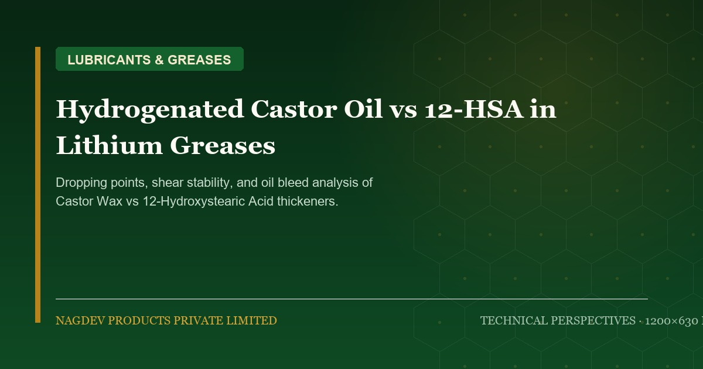

Hydrogenated Castor Oil vs. 12-HSA: Performance in High-Temperature Lithium Greases

Lithium-based greases account for more than 70% of the world's lubricating greases. While simple lithium soaps utilize fatty acids, high-performance industrial and automotive greases rely on two critical castor derivatives: Hydrogenated Castor Oil (HCO / Castor Wax) and 12-Hydroxystearic Acid (12-HSA). Understanding their structural differences is vital for grease formulators seeking optimum dropping points, mechanical shear stability, and oil separation resistance.
1. Molecular Difference: Triglyceride vs. Free Fatty Acid
Although both molecules originate from castor oil hydrogenation, their chemical structures differ significantly:
- Hydrogenated Castor Oil (HCO / NDEVAX™ HCO): A glyceryl tri-(12-hydroxystearate) triglyceride. Melting point is typically 85°C to 88°C with an iodine value under 3.0 g I₂/100g. It contains glycerol bound to three 12-hydroxystearate chains.
- 12-Hydroxystearic Acid (12-HSA / NDEVACID™ 12HSA): A pure monocarboxylic fatty acid produced by splitting HCO and removing the glycerin backbone. Melting point is 75°C to 78°C with an acid value of 175 to 182 mg KOH/g.
2. Saponification Mechanism in Lithium Soap Formation
When reacting with Lithium Hydroxide Monohydrate (LiOH·H₂O) in base oil:
12-HSA Reaction: Direct neutralization of the carboxylic acid group occurs rapidly at 90°C to 110°C, producing Lithium 12-Hydroxystearate without producing free glycerin. The stoichiometric control is precise, minimizing water formation and eliminating cloudy glyceride haze.
HCO Reaction: Requires saponification (cleaving the ester bonds). While cost-effective, this in-situ reaction liberates free glycerol into the grease matrix. If not evaporated at temperatures above 190°C–205°C, residual glycerol can soften the soap fibers and impair extreme-pressure (EP) performance.
3. Performance Matrix in Finished Greases
| Property | 12-HSA Lithium Simple Grease | 12-HSA + Complexing Agent (Azelaic/Sebacic) | Direct HCO Saponified Grease |
|---|---|---|---|
| Dropping Point (°C) | 190°C – 205°C | 260°C – 290°C+ (High Temp Complex) | 180°C – 195°C |
| Mechanical Shear Stability (100,000 strokes) | ΔPen < 20 units (Superior) | ΔPen < 15 units (Exceptional) | ΔPen 25–35 units (Moderate) |
| Soap Fiber Morphology | Dense, twisted interlocking micro-fibrils | Reinforced cross-linked polymer-like network | Short, clustered fibrous bundles |
| Oil Bleed (100°C / 24h) | 2.0% – 3.5% | 1.2% – 2.0% | 3.5% – 5.5% |
4. Formulator Guidance
For standard multipurpose automotive wheel-bearing greases (NLGI 2), high-purity 12-HSA remains the indisputable gold standard. However, HCO can be strategically incorporated as a co-thickener or rheology control agent, offering cost savings and enhanced water wash-out resistance.
Nagdev Products produces both NDEVACID™ 12HSA (Flakes/Powder) and NDEVAX™ HCO with ultra-low color values (< 2 Gardner) and tightly controlled acid/hydroxyl numbers, ensuring batch-to-batch consistency in high-speed grease kettles.
Formulating with Castor Derivatives?
Our technical team in Banaskantha, Gujarat provides batch samples, certificates of analysis (CoA), and custom specifications for global formulators.